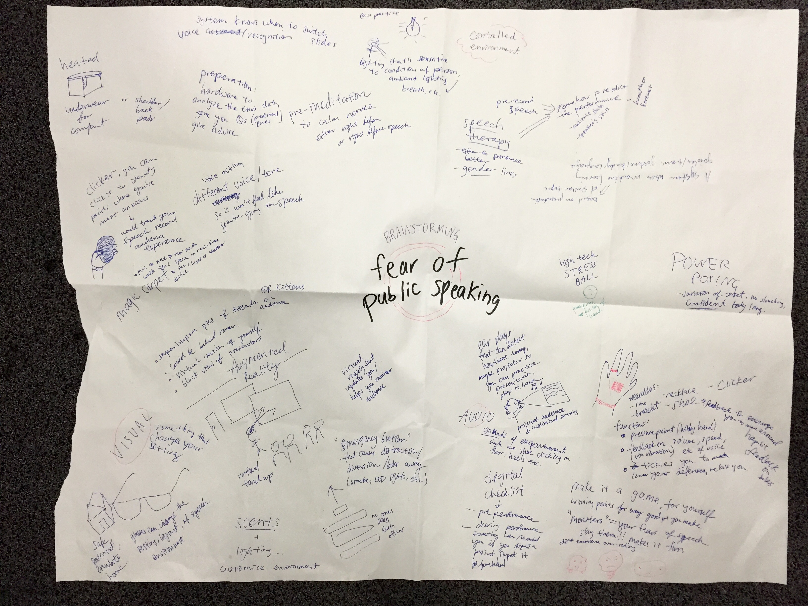
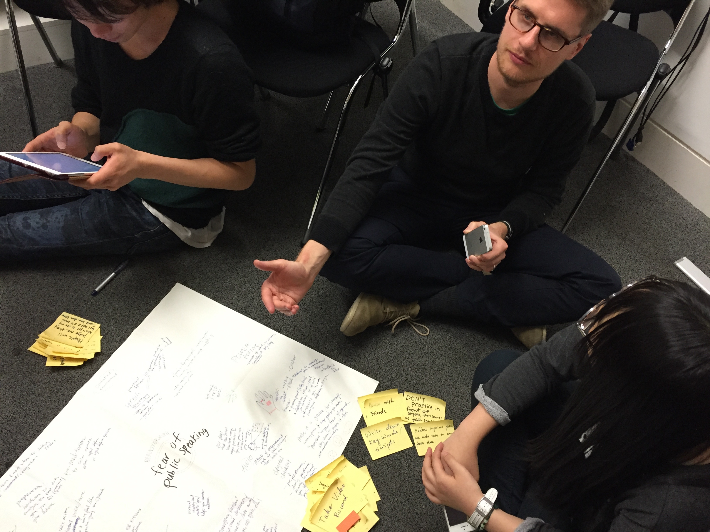
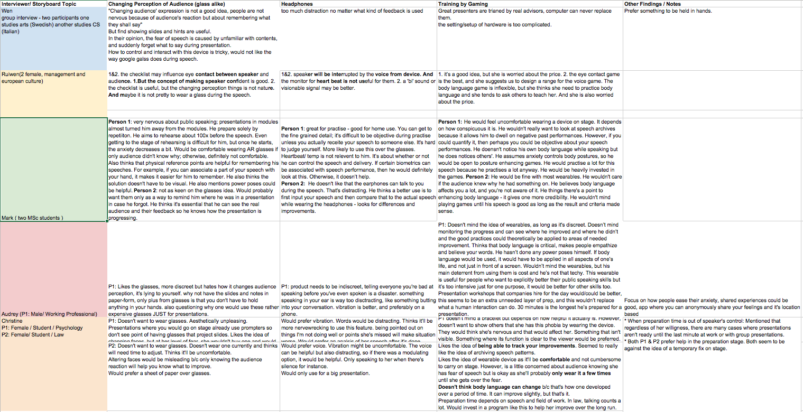
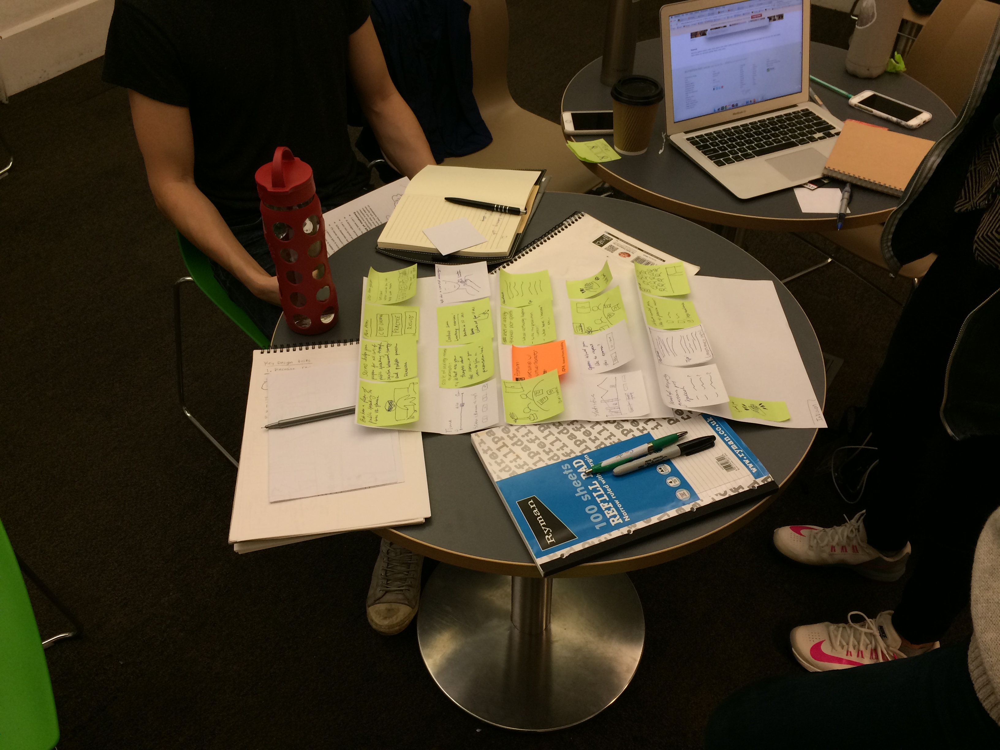
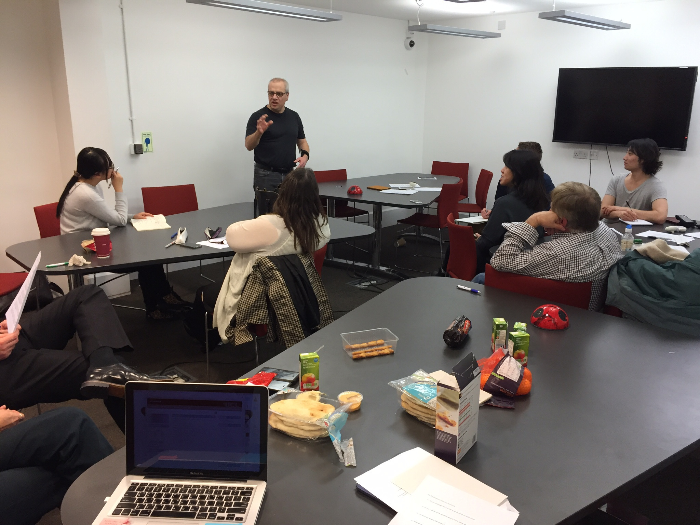

Mark Bubel

Aware Me
Project goal
Our team was to research, design and test an assistive technology that solved a real problem. We chose people who have a fear of public speaking.
Project outcome
A wearable that helps people with fear of public speaking to overcome their anxiety.
My Process
- Motivation and discovery
- Semi-structured interviews
- Information synthesis
- Iterative sketching and storyboarding
- Interaction design and more field research
- Usability testing
- Design competition presentation
- Reflection of process
Motivation and discovery
Our team was able to choose any disability for which to design an assistive technology. There was a long list of which to choose (including low vision, cognitive problems, mobility, etc.)
We chose to design a solution for glossophobia sufferers because this debilitating phobia prevents them from succeeding academically, professionally, and socially.
Glossophobia, or speech anxiety, is a severe fear of public speaking in front of people. People who suffer from glossophobia experience intense anxiety prior to, or at the very thought of having to verbally communicate with any group. Symptoms include freezing up, dry mouth, weak voice, nausea, shaking body, stiffening of neck and upper back muscles, and a desire to flee the premises.
Glossophobia sufferers avoid situations or events that would require them to speak. This can range from job interviews where you have to present yourself, to parties where you have to meet new people, to the classroom where the teacher can pick you to answer a question. Treatment options for glossophobia include cognitive behavioral psychology, relaxation techniques, and medication taken in conjunction with therapy.
Discovery
We followed the user centered design process for this project, and our first step after deciding on our disability was to become better acquainted with the disease, research about the disease, and any current solutions.
I started combing through the academic literature of fear of speech with a specific goal of technology solutions. I gathered interesting articles, specific quotes from research, and assistive technology (software and hardware) for the team to start assessing.
This desk research led to many different directions and ideas, so we began brainstorming early on in the project to get down as many ideas as possible on paper. We thought in broad terms and did not limit ourselves to what was possible or even what made sense.


Semi-structured interviews
With our desk research completed, we realized that fear of public speaking is private, embarrassing, and hard to solve with just technology. We needed further information before we could even begin thinking about possible solutions.
With our desk research completed, we realized that fear of public speaking is private, embarrassing, and hard to solve with just technology. We needed further information before we could even begin thinking about possible solutions.
I created an interview questionnaire with broad, yet important questions that would help guide us to uncover more about what it means to have fear of public speaking and how that affects daily life and performance.
Information synthesis
With 10+ interviews finished, our team had generated a lot data. Rather than transcribing every interview and then writing a lengthy report, we took an agile approach to sharing and collaboration.
The answer was to start grouping ideas into broad categories through the use of affinity diagramming.
Synthesizing our collected interview data yielded many insights through which we had a valid foundation to start considering design ideas. Some important insights found about fear of public speaking:
- Interaction with audience and eye contact is important for presenter
- Everyone experiences some form of physical sensation before a speech
- Everyone engages in some kind of pre-speech preparation
- Tools on stage (mic, podium, teleprompter, clicker) can act as an emotional crutch
- Post performance: presenter is relieved but not everyone reflects on their performance


Iterative sketching and storyboarding
Now that we synthesized important points from our desk research and interviews, we decided to start sketching out ideas and storyboarding possible interactions of technology designed to aid fear of public speaking.
This storyboard is for an early idea that I had using augmented reality (AR) to alter the speaker’s perception of the audience. This storyboard was directly influenced from what we uncovered in the user interviews.
The problem with this storyboard is that we had a limited amount of time to design a working solution, and we didn’t have experience designing with AR, so this idea was quickly discarded. I learned that starting with pen and paper is absolutely essential to getting down ideas quickly and evaluating the feasibility and desirability. It must also be considered that the user may feel that the AR glasses would draw attention to their fear instead of alleviating it.

Parallel sketching, the idea of generating many different design solutions as possible was another successful approach I took to uncovering possible ideas to further explore.
While creating storyboards for an AR approach to our design, I also explored an idea where the speaker would wear an earpiece that would monitor for rising anxiety through biometrics. It would also provide helpful, discreet hints to the speaker if she forgot her speech.


Interaction design and field research
We decided to continue sketching to generate more ideas and wanted to go back out into the field to discuss our designs with users to get feedback.
We spoke with more people to uncover what they thought, and one of the main takeaways was that wearing devices to aid in fear of public speaking made people nervous.
We did not receive encouraging feedback from our previous storyboards. At this point, however, I learned just how important is sketching and storyboarding. I was glad we did not invest a lot of time into past designs; as a result, rapid iteration without losing time was possible.

Now that we identified what was good about our ideas and what had to be rethought, we decided to contact an expert in social anxieties.
Our team met with a certified cognitive behavioural therapist to discuss how she helps people overcome their social anxieties of which fear of public speaking is prevalent.
We learned that along with prescription medicine like SSRIs, cognitive behavioural therapy is proven, safe, and effective in helping people overcome a mental problem or anxiety. We learned that anxiety is both genetic and a learned response from “dangerous” situations. The idea of CBT is for the person to confront their fears, challenging their thinking and behavior. At that point, calming exercise like deep breathing or meditation can help them.
My main takeaway from this research was that to someone with social anxiety while public speaking, outward behaviour like hands shaking are sometimes exaggerated by the person, and the audience may not even notice it.
I then realized that in order to design something to help with fear of public speaking, it needed to:
- Be discreet if the design is a wearable device
- Bring the person’s attention, gently, back to the moment
- Help the user perform CBT exercises that would calm them with public speaking.


Usability testing
At this point in the UCD process, we had a prototype based on several rounds of both user and expert feedback, and we needed to test it with users to determine effectiveness.
Feedback from the tests gave me an invaluable lesson about how much can't be assumed about users without talking to them.


If the wristband is small, it wouldn’t be a problem, you would get used to it really quickly.
I think it would be quite good actually. Especially for people who would be learning in the first instance, so learning how to control their tempo and their voice. I think it would be useful.
Something watch size—I wear a watch anyway, so having another strap on my wrist wouldn’t be an issue.
Because you would know your stop point and end point, it’s quite good. Because from my point of view, if I knew the vibration meant I was talking too quickly, that would have been useful because I already know I talk too quickly and it would’ve been like someone poking me, wait slow down a little bit.
Usability testing yielded interesting data even with a small group of people and it allowed us to understand their thought processes attached to their actions. As part of the final task, the users had to give a two-minute speech while wearing the device. Before and after this task, we asked a list of open-ended questions to further understand their thoughts and feelings of the experience.
A sample of these questions included:
- Do you understand why you had to set up the device before use?
- How did you feel wearing something on your wrist?
- Do you have suggestions to change the haptic feedback?
Design competition presentation
Our teams’ design was selected from a 19% selection rate of other student designs from around the world. We got to travel to the 2016 ACM CHI Conference in San Jose, CA to present our design to a panel of experts in the design field.
While our design wasn’t selected as a winner, we did not receive an honorable mention, which was an unbelievably great feeling!

Reflection of my process
AwareMe specifically highlights time and anxiety signifiers in an inconspicuous way without requiring a long time commitment to learn or use. We consciously incorporated existing public speaking anxiety solutions, and aimed to bring the user's attention to the anxiety, so that they can take the proper measures to reduce the fear.
Our challenge during the UCD process was realizing that social anxiety cannot be easily cured, and it is hard to detect from a research perspective because of ethical reasons. Storyboarding was absolutely essential to exploring a range of ideas because my design solutions changed several times.
Our design proved to be useful during our usability testing, but I believe that further rounds of observation and interviews are appropriate to improve our device. I would want to test the device in a real-life public speaking situation, in order to observe the speaker’s natural behavior. We could not completely replicate this environment during usability testing due to time constraints.
Ultimately, AwareMe is a useful device for any user who wants to target and improve their speech patterns.
Copyright © 2017 Mark Bubel